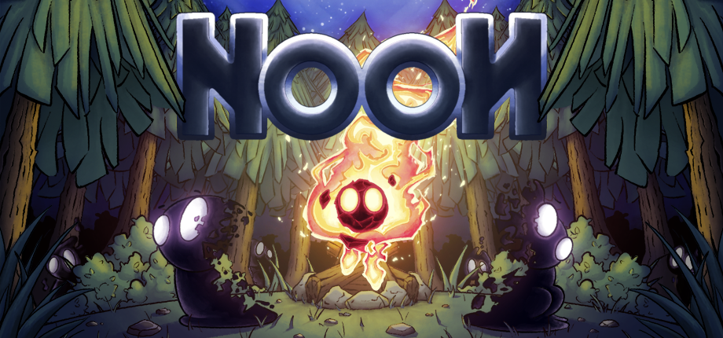
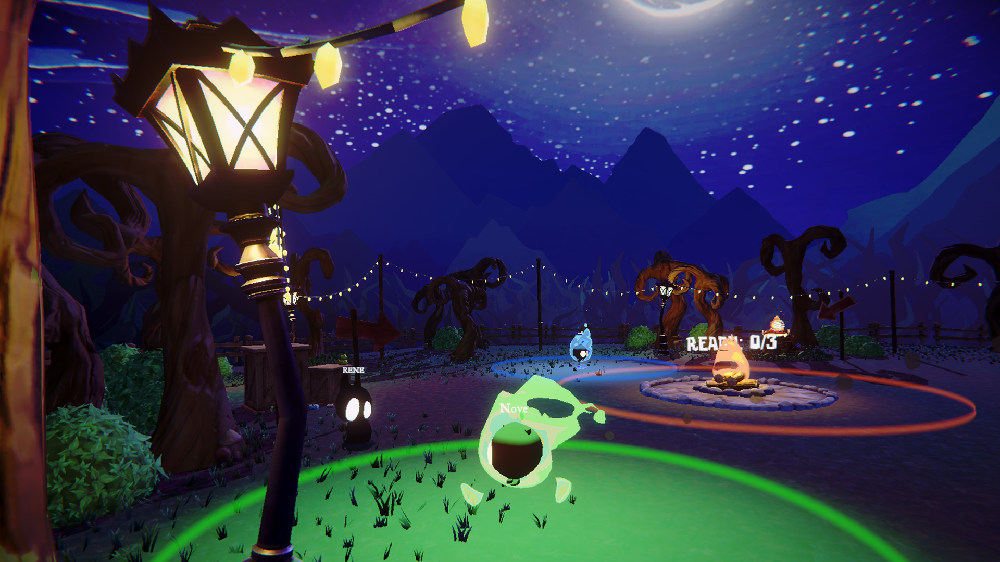
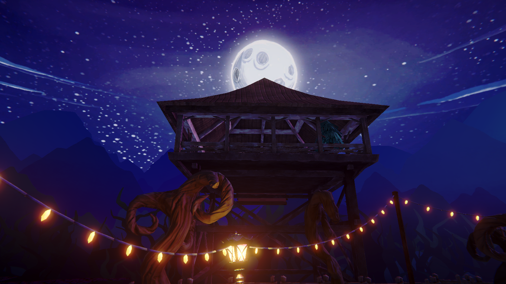
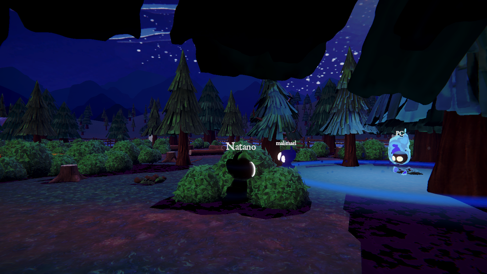
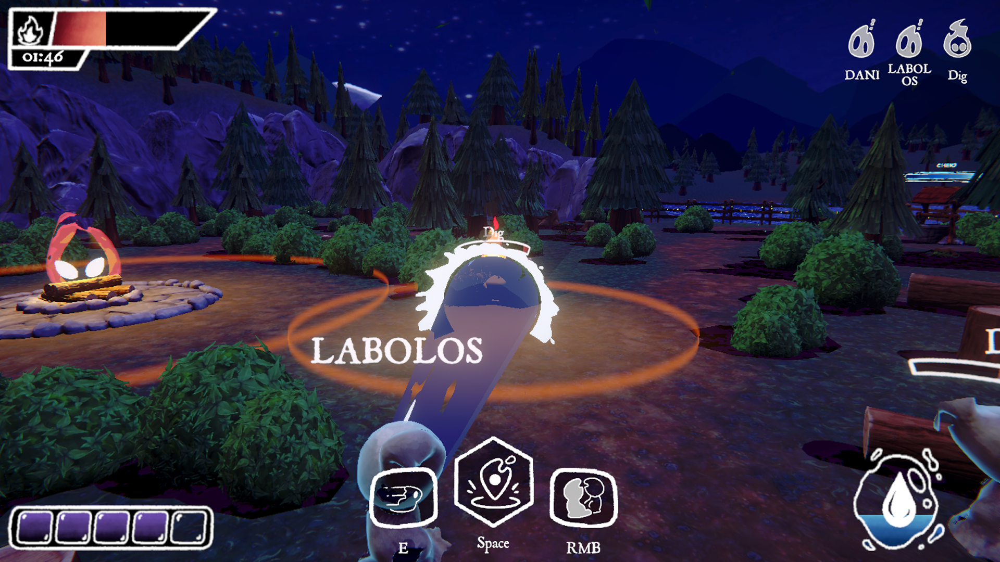
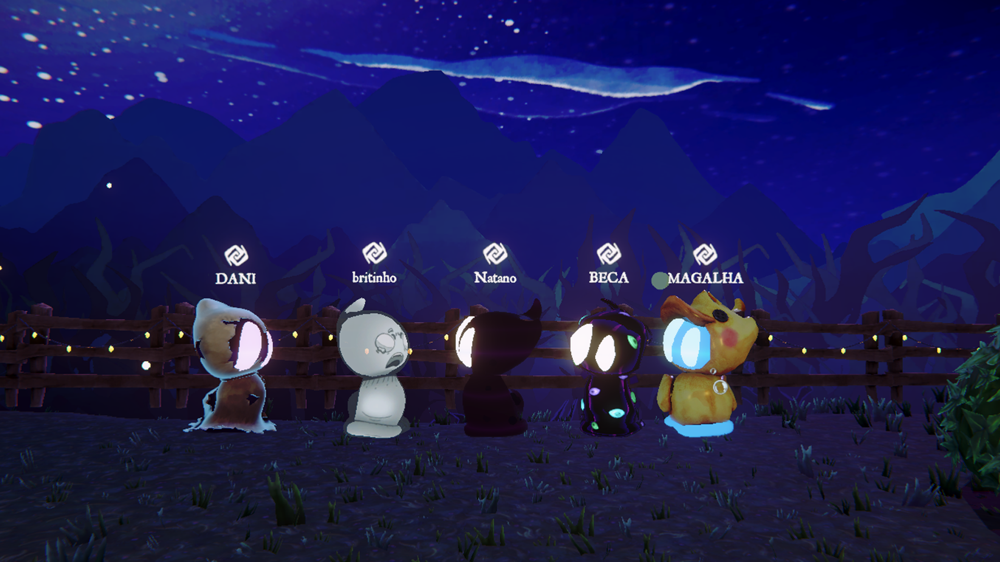
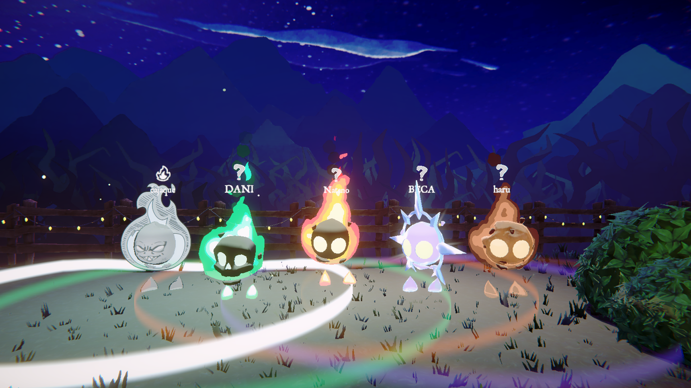
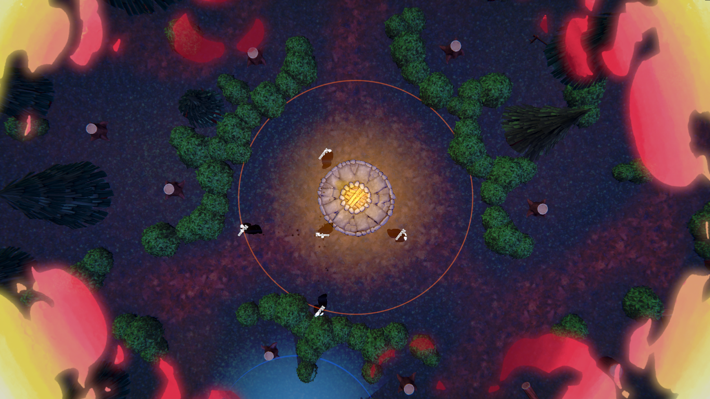

Jogo Aprovado
IESB Pitch Day 2026.1

Noon reinventa o esconde-esconde com uma mecânica inovadora baseada em luz e sombras. Jogue como o Fogo, iluminando o cenário, queimando objetos e caçando criaturas da escuridão, ou assuma o papel de uma Sombra, escondendo-se entre objetos e fundindo-se às trevas para escapar. Em cada partida, controlar a luz significa controlar a sobrevivência.







IESB Pitch Day 2026.1
Brasília Game Hub 2026.2